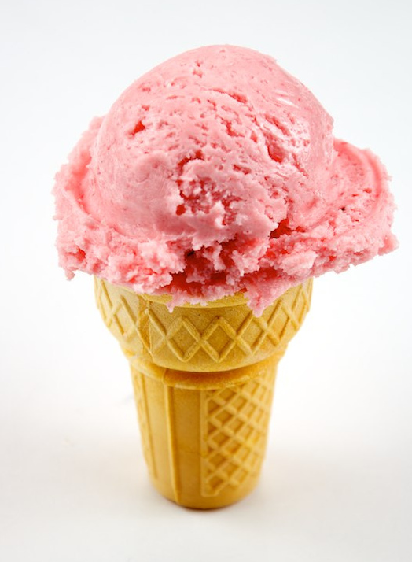

Strawberry ice cream is a delightful treat that perfectly balances sweetness with the natural tartness of fresh berries. Its creamy texture melts in your mouth, releasing bursts of fruity flavor with every s poonful. Made with ripe strawberries, rich cream, and just the right amount of sugar, it offers a refreshing and satisfying dessert experience. Whether enjoyed on a sunny day in a cone or served in a bowl with toppings, strawberry ice cream remains a timeless favorite that brings a taste of summer in every bite.
In a bowl, combine chopped strawberries with 1/4 cup of the sugar and lemon juice. Let sit for 15-20 minutes to macerate (soften and release juices).
Mash with a fork or blend lightly (for a smoother texture). Set aside.
In a separate bowl, whisk together the remaining sugar, heavy cream, milk, vanilla extract, and salt until the sugar is dissolved.
Stir in the prepared strawberry mixture. Taste and adjust sweetness if needed.
over and refrigerate for at least 2 hours, or until the mixture is very cold (overnight is ideal).
Pour the chilled mixture into your ice cream maker and churn according to the manufacturer’s instructions (usually 20-25 minutes) until it reaches a soft-serve consistency.
Transfer the churned ice cream into a lidded container and freeze for 4-6 hours (or until scoopable).
Scoop into bowls or cones and enjoy your creamy homemade strawberry ice cream!